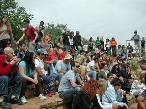

משלושה עשורים של הפקת אירועים, פסטיבלים, השתלמויות וטיולים בתחום ריקודי העם הישראליים.
פסטיבל "100% אמנות" — ניהול אמנותי של הפרויקט לקידום אמנים עם מוגבלות.
"אורות המחול" — ניהול אמנותי לפרס ריקוד השנה במחול הישראלי.
השתלמות מרקידים — ארגון השתלמויות ריקודים בשילוב העשרות בנושאים הנוגעים לעולם המרקידים, וכן שילוב ריקודי ילדים למורים וגננות.
מחנות בחו"ל — מעביר השתלמויות וסדנאות ריקודי עם למרקידים ורוקדים מרחבי העולם.
טיולים — "ראש-אחר" — ארגון וניהול טיולים לרוקדים מכל הארץ, המשלבים טיולים רגליים ביום וריקודים בלילה.
"מחול" — ארגון אירועים בינלאומיים בשילוב פסטיבל כרמיאל, הכולל הטסת רוקדים ומרקידים מכל קצוות העולם לסדנאות ריקודים בכל רחבי הארץ עם יוצרים מקומיים, בשילוב טיולים להכרת הארץ.
"מצעד הריקודים" — הפקת האירוע באופן חד־שנתי, שהחל להיות מסורת גם בקרב חוגים אחרים, ומאפשר הצבעת הרוקדים על הריקודים האהובים ביותר עליהם, ולאחר מכן הרקדתם לפי רשימת הזוכים בסדר יורד.
"אליפות ישראל בריקודי עם" — ארגון והפקה.
הרקדות בהופעה חיה עם זמרים מפורסמים כמו: שלומי שבת, עמיר בניון, בועז שרעבי, גלי עטרי, גאיה, יזהר כהן, דורון מזר, גליקריה, ראובן ארז ועוד.
אתר באינטרנט — פתיחת אתר ראשון מסוגו בנושא ריקודי עם, המאפשר מגוון שירותים לרוקד וכן יצירת קשר בינלאומי.
ערבי התרמה — ארגון הרקדות בהתנדבות למען אוכלוסייה במצוקה, כגון: אקי"ם, "דרור" (שיקום פסיכיאטרי), "כינור דוד" (מלחמה בסמים) ועוד.
שעשועונים בנושא ריקודי עם — חיבור משחקים המקנים לרוקדים הכרה מעמיקה יותר בתחום, כמו: "יותר מזל במעגל", "הכה את התקליטייה", "קריוקי ריקודי עם" ועוד.
דרבוקה — החדרת הדרבוקה וכלי הקשה נוספים ככלים קבועים למדריך, לשם העשרה מוזיקלית והעלאת המורל.

רוצים להפיק אירוע ריקודי עם?
לפרטים על הפקת אירועים, פסטיבלים והשתלמויות — צרו קשר.